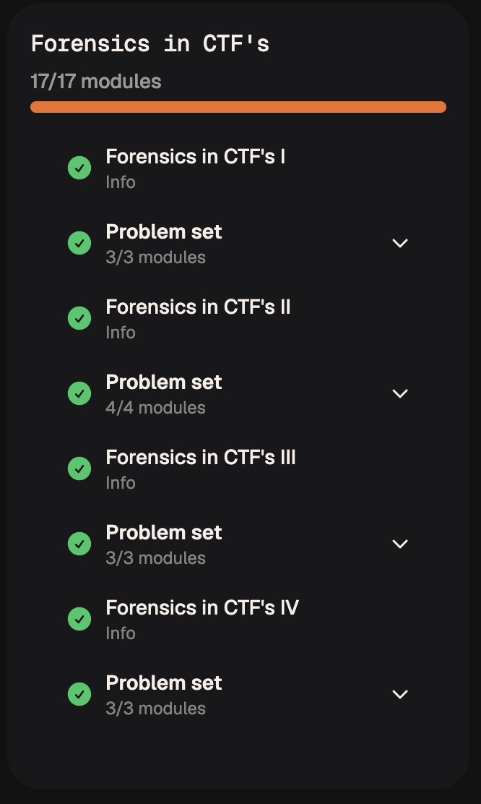

Event / Platform: PicoCTF | Category: Digital Forensics | Difficulty: Medium
Author: ksngstr | Status: Solved
Flag: academy{REDACTED}
1. Challenge Overview & Objectives
- Prompt Description: > “Figure out how they moved the flag. tftp.pcapng”
- Core Questions Answered:
- What are some other ways to hide data? Combining classical substitution ciphers (ROT-13) with image steganography (
steghide) over an unencrypted transport protocol (TFTP). - Based on the title, what files are transferred? Six files transferred via Trivial File Transfer Protocol (TFTP):
instructions.txt,plan,program.deb,picture1.bmp,picture2.bmp, andpicture3.bmp. - Where is the flag hidden? Embedded inside
picture3.bmpusingsteghideand protected with a passphrase recovered from the network traffic.
- What are some other ways to hide data? Combining classical substitution ciphers (ROT-13) with image steganography (
2. Provided Artifacts & Integrity Verification
| File Name | File Type / Magic Bytes | Size | SHA-256 Hash |
|---|---|---|---|
tftp.pcapng |
pcapng capture file |
50 MB |
11b8fa4469bcdc8dd62140ee71621c526d8b4d04b7b6b5304053171bb0c04903 |
3. Environment & Tooling
- OS / Analysis VM: Kali Linux
- Tools Used:
Wireshark,CyberChef,binwalk,strings,exiftool,steghide,zsteg, dCode.fr, Aperi’Solve
4. Investigation Log & Confirmed Findings
Step 1: Initial Triage
Commands Run:
$ file tftp.pcapng $ exiftool -a -u -g1 -ee3 -api RetrieveAll=3 tftp.pcapng $ strings -n 8 tftp.pcapng | grep -i "academy"Findings: Confirmed a valid
pcapngnetwork capture. No plaintext flag strings were present in the raw packet data.
Step 2: Network Traffic & TFTP Extraction (Wireshark)
- TFTP Write Request (
instructions.txt):Observation: Packet 3 is a TFTP transfer from
10.10.10.11:34790to10.10.10.12:52355.Extracted Data: Identified ROT-13 ciphertext and decoded it using dCode ROT-13:
TFTP DOESNT ENCRYPT OUR TRAFFIC SO WE MUST DISGUISE OUR FLAG TRANSFER. FIGURE OUT A WAY TO HIDE THE FLAG AND I WILL CHECK BACK FOR THE PLAN
- TFTP Read Request (
plan):Observation: Packet 20 revealed a 59-byte TFTP data transfer from
10.10.10.12:41165to10.10.10.11:44157.Extracted Data: Decoded the ROT-13 ciphertext to reveal the steganography passphrase (
[REDACTED]):I USED THE PROGRAM AND HID IT WITH - [REDACTED]. CHECK OUT THE PHOTOS
- Bulk Object Extraction:
- Action: Used File > Export Objects > TFTP in Wireshark to extract all transferred files (
instructions.txt,plan,program.deb,picture1.bmp,picture2.bmp, andpicture3.bmp) to a local working directory.
- Action: Used File > Export Objects > TFTP in Wireshark to extract all transferred files (
Step 3: Package & Steganography Analysis
- Debian Package Inspection (
program.deb):- Observation: Ran
binwalk -Mek program.deb(ordpkg -I program.deb) to identify the software transferred over TFTP. - Finding: Confirmed the package was
steghide, indicating the exact tool used to embed data into the BMP images.
- Observation: Ran
- Image Triage (
picture1.bmp–picture3.bmp):- Observation: Standard metadata (
exiftool) andstringschecks returned no anomalies. Runningzsteg -aflagged potential OpenPGP/binary data at the end ofpicture3.bmp, confirming hidden payload presence.
- Observation: Standard metadata (
5. Solution & Flag Extraction
Step-by-Step Solve Path
Open
tftp.pcapngin Wireshark and extract all TFTP objects via File > Export Objects > TFTP.Decode the contents of
instructions.txtandplanusing ROT-13 to uncover the passphrase ([REDACTED]).Inspect
program.debwithbinwalkto confirmsteghidewas used to hide the payload.Extract the hidden flag file from
picture3.bmpusingsteghide:$ steghide extract -sf picture3.bmp -p [REDACTED]Read the extracted
flag.txtfile to obtain the final flag.
Decoded Flag
academy{REDACTED}6. MITRE ATT&CK® Framework Mapping
| Tactic | Technique ID | Technique Name | Challenge Behavior Observed |
|---|---|---|---|
| Defense Evasion | T1027 |
Obfuscated Files or Information | Encoding operational communications (instructions.txt and plan) using ROT-13 to avoid casual plaintext inspection. |
| Defense Evasion | T1027.003 |
Obfuscated Files or Information: Steganography | Embedding the flag inside an uncompressed bitmap image (picture3.bmp) via steghide with passphrase protection. |
| Command and Control | T1105 |
Ingress Tool Transfer | Transferring the steghide Debian installer (program.deb) across the network to stage the steganography utility. |
| Exfiltration | T1048.003 |
Exfiltration Over Alternative Protocol: Exfiltration Over Unencrypted Non-C2 Protocol | Using cleartext UDP-based TFTP to move the steganographically disguised flag out of the environment. |
7. Key Takeaways & Lessons Learned
- Protocol Awareness: TFTP transmits files in cleartext over UDP, making Wireshark’s Export Objects feature the fastest way to reconstruct transferred payloads.
- Tool Correlation: Always inspect accompanying binaries or installers (
program.deb) in a capture—they directly reveal the encoding or steganography tool used by the threat actor. - Read Clues Carefully: The passphrase was hidden in plain sight inside the decoded
planmessage rather than requiring brute-force cracking. - Steganography Tooling: While
zstegis great for detecting LSB anomalies and appended data in PNG/BMP files,steghideuses a pseudo-random bit-distribution algorithm that requires the matching tool and passphrase for extraction.
8. picoCTF/CyLab Forensics Track Record
